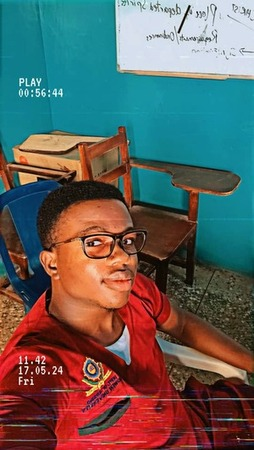

About Me
My name is Ohore Emmanuel, and I am a frontend developer always
striving to learn and improve my skills. Over the past year, I have
focused on HTML, CSS, and JavaScript to enhance my proficiency. I am
passionate about mastering these technologies and continuously
learning new ones to achieve my goals as a proficient and versatile
developer.
My Tech Goals
First and foremost, my overarching goal is to continue improving my
skills and proficiency in various technologies. However, my ambition
is to secure a position in a tech-related job where I can gain
valuable experience working alongside developers from diverse
backgrounds. I aim to absorb insights and techniques that will
enhance my programming abilities.
Ultimately, within the next two years, I aspire to get involved in
open-source communities, expand my professional network, learn new
technologies, and improve on those I already know. Through these
experiences, I hope to achieve significant growth and development in
my career as a frontend developer.
